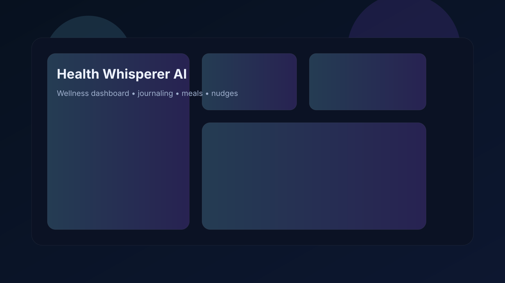
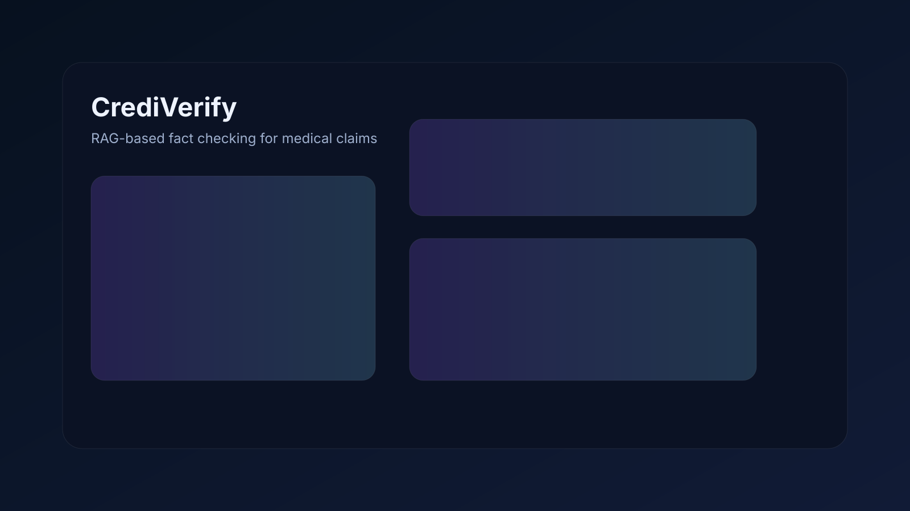
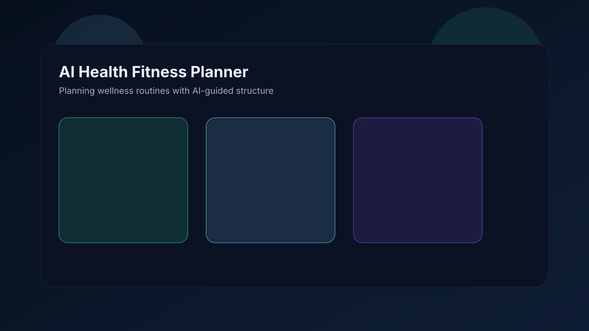
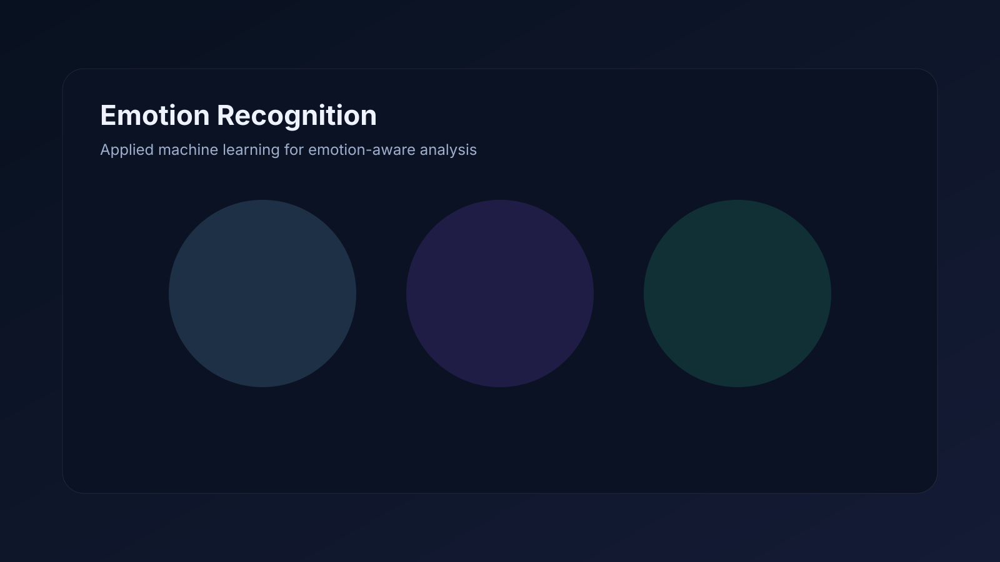
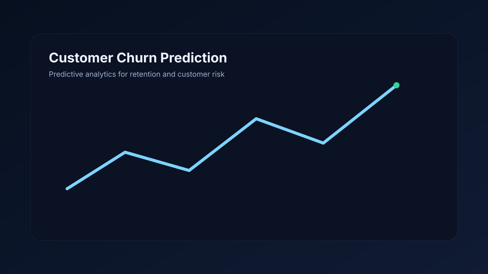

AI Engineer • Data Engineer • Production Builder
Building AI systems that are useful, scalable, and real.
I create
|
I work at the intersection of GenAI and data engineering — building RAG applications, intelligent developer workflows, analytics-ready data platforms, and cloud-native systems that hold up in real environments.
Available for impactful AI roles
San Antonio, TX
Current Focus
Production-grade GenAI + data systems
Designing systems that connect clean data foundations with AI capabilities: retrieval, automation, observability, deployment, and developer productivity.
Python
RAG
SQL
Azure
PySpark
LLMs
About
A technical builder with an AI-first edge.
My work combines deep data engineering foundations with practical AI implementation. I enjoy building systems end-to-end — from ingestion, transformation, and modeling to RAG workflows, application logic, deployment, and operational reliability.
I’m especially interested in AI systems that solve real workflow problems: intelligent search, decision support, productivity tooling, and domain-aware applications powered by LLMs.
Core Technologies
Python
SQL
PySpark
Azure Synapse
ADF
ADLS Gen2
Snowflake
SageMaker
RAG
Embeddings
Supabase
REST APIs
CI/CD
Docker
Experience
Building enterprise-grade systems
I’ve worked across cloud data platforms, feature engineering, pipeline automation, and AI-ready systems, with a strong focus on scalability, reliability, and production quality.
Data Engineer • Marathon Petroleum Corp
June 2025 – PresentBuilt and maintained production-grade data pipelines and AI-ready feature layers supporting analytics and ML workloads at scale. Improved distributed Spark performance through partition-skew mitigation, broadcast joins, and pipeline optimizations that reduced latency and cloud cost.
Automated deployment workflows using Python and PowerShell, improved release consistency with CI/CD patterns, and designed secure access models with RBAC and data protection controls for enterprise datasets used in reporting, analytics, and downstream AI use cases.
Data Engineer • Fiserv
Feb 2024 – June 2025Architected scalable data lake layers for structured and unstructured workloads, enabling analytics, feature engineering, and ML consumption patterns across cloud environments. Built retraining-ready data flows and improved data usability for near real-time insights.
Supported cloud migration from legacy systems into Snowflake and AWS-based data ecosystems, using validation frameworks and reusable PySpark components to improve reliability, developer speed, and production readiness.
Engineering Intern • Changing the Present
Dec 2023 – Feb 2024Developed optimized ETL pipelines using Python libraries for API-based ingestion and data preparation, reducing preprocessing latency for analytics and ML-oriented workflows.
Contributed to backend data modeling and delivery practices by designing normalized MySQL schemas, coordinating work in Agile sprints, and supporting GitHub-based development workflows that improved execution quality and collaboration.
Signature Strengths
Not just project cards — a systems story.
AI Applications
RAG pipelines, grounded responses, prompt workflows, embeddings, and agent-like orchestration.
Data Platforms
Reliable ingestion, medallion architecture thinking, performance tuning, and production data readiness.
Cloud Execution
Azure and AWS implementation experience spanning orchestration, storage, compute, deployment, and automation.
Featured Projects
Curated work
A focused project selection instead of listing every repository. For additional work, visitors can explore my GitHub directly.

Flagship
Health Whisperer AI
A cross-platform wellness intelligence system that unifies journals, meals, metrics, and chat-based support into a single personalized experience. It uses retrieval, embeddings, and targeted nudging logic to make health tracking more adaptive and human.
Streamlit
Supabase
OpenAI
pgvector
RAG
Telegram Bot

GenAI
CrediVerify
A RAG-based fact-checking workflow that validates health claims from video content against trusted literature sources. Designed to reduce manual verification effort and make evidence-backed analysis faster and more reliable.
Python
Streamlit
Gemini
GPT
PubMed
Embeddings

AI App
AI-Health-Fitness-Planner
A health and fitness planning application focused on generating practical wellness guidance, structured planning flows, and user-friendly interactions around personal health goals.
AI
Health
Planning
Python

ML
Emotion Recognition
A machine learning project centered on detecting emotional patterns from input data, demonstrating model development, inference logic, and applied AI techniques for human-centered analysis.
Machine Learning
Emotion AI
Python
Inference

Predictive ML
Customer Churn Prediction
A predictive analytics project aimed at identifying churn risk, helping translate customer behavior data into actionable retention insights through feature engineering and classification modeling.
Classification
Feature Engineering
Python
Analytics
Want to see more?
Explore the rest of my original work, experiments, and repositories directly on GitHub.
View All RepositoriesContact
Let’s build something meaningful.
I’m interested in AI Engineering, GenAI platforms, data-intensive systems, and roles where production quality matters.